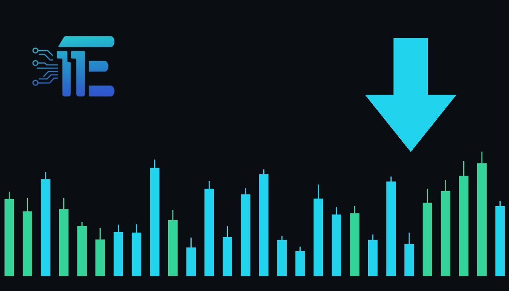

Gold Plunges to 14-Month Low Amid Hawkish Fed Expectationsតម្លៃមាសធ្លាក់ចុះដល់កម្រិតទាបបំផុតក្នុងរយៈពេល ១៤ ខែ Fed
XAU/USD impact: ▼ Bearishផលប៉ះពាល់លើ XAU/USD: ▼ ធ្លាក់

Gold has dropped to a 14-month low due to aggressive Federal Reserve expectations and a strong dollar. This sharp correction raises questions about whether exchange-traded funds and long-term investors should re-enter the market.
តម្លៃមាសបានធ្លាក់ចុះយ៉ាងខ្លាំងដោយសារតែការរំពឹងទុកពីគោលនយោបាយតឹងរ៉ឹងរបស់ Fed និងកម្លាំងនៃប្រាក់ ដុល្លារអាមេរិក។ ការធ្លាក់ចុះនេះធ្វើឱ្យអ្នកជួញដូរពិចារណាឡើងវិញលើឱកាសវិនិយោគរយៈពេលវែង។
Gold prices have experienced a notable downturn, sinking to a 14-month low amid prevailing market expectations of tighter monetary policy and sustained US dollar strength. Recent commentary and policy discussions from central bank officials point toward a persistently cautious stance on inflation, keeping rate-hike bets alive and weighing heavily on non-yielding precious metals.
តម្លៃមាសបានធ្លាក់ចុះយ៉ាងខ្លាំងដល់កម្រិតទាបបំផុតក្នុងរយៈពេល ១៤ ខែ ដោយសារតែការរំពឹងទុករបស់ទីផ្សារចំពោះគោលនយោបាយការប្រាក់តឹងរ៉ឹង និងកម្លាំងខ្លាំងរបស់ប្រាក់ ដុល្លារអាមេរិក។ ការពិភាក្សា និងសេចក្តីថ្លែងការណ៍ថ្មីៗពីមន្ត្រី ធនាគារកណ្តាល បង្ហាញពីជំហរប្រុងប្រយ័ត្នចំពោះ អតិផរណា ដែលរក្សាក្តីរំពឹងទុកនៃការដំឡើង អត្រាការប្រាក់ និងដាក់សម្ពាធយ៉ាងខ្លាំងលើទីផ្សារមាស។
The primary transmission channel to XAU/USD operates through shifting interest rate expectations and currency valuations. When central bank officials signal a more aggressive approach to counter stubborn inflation, the US dollar typically strengthens while Treasury yields rise. Higher real yields increase the opportunity cost of holding bullion, making non-yielding assets less attractive to investors.
ច្រកបញ្ជូនតម្លៃទៅកាន់ XAU/USD គឺតាមរយៈការផ្លាស់ប្តូរការរំពឹងទុកលើ អត្រាការប្រាក់ និងតម្លៃប្រាក់ ដុល្លារអាមេរិក។ នៅពេលដែលមន្ត្រី ធនាគារកណ្តាល បង្ហាញពីភាពតឹងរ៉ឹងដើម្បីប្រយុទ្ធប្រឆាំងនឹង អតិផរណា ប្រាក់ ដុល្លារអាមេរិក តែងតែឡើងថ្លៃ ហើយផលប័ត្របំណុលរដ្ឋាភិបាលក៏កើនឡើងផងដែរ ដែលធ្វើឱ្យការកាន់កាប់ មាស មានការចំណាយខ្ពស់ជាងមុន។
Looking at potential market scenarios, a continuation of hawkish rhetoric and strong economic indicators would likely sustain downward pressure on gold, keeping prices anchored near recent lows. Conversely, any unexpected softening in upcoming inflation data or a shift in policy tone could ease pressure on real yields, potentially reviving safe-haven demand and offering support to the metal.
ផ្អែកលើស្ថានភាពទីផ្សារ ប្រសិនបើការយល់ឃើញបែបតឹងរ៉ឹងបន្តកើតមាន តម្លៃ មាស អាចនឹងស្ថិតក្រោមសម្ពាធបន្តទៀត។ ប៉ុន្តែផ្ទុយទៅវិញ ទិន្នន័យ អតិផរណា ស្រទន់ជាងមុន ឬការផ្លាស់ប្តូរគោលនយោបាយអាចជួយកាត់បន្ថយសម្ពាធ និងទាក់ទាញតម្រូវការ មាស ឡើងវិញ។
Market participants should closely monitor upcoming macroeconomic releases, including employment and inflation reports, alongside official communications from policymakers. These indicators will provide vital clues regarding the future path of interest rates and their subsequent impact on the foreign exchange and precious metals landscape.
អ្នកជួញដូរ គួរតែតាមដានយ៉ាងដិតដល់នូវទិន្នន័យសេដ្ឋកិច្ចនាពេលខាងមុខ ព្រមទាំងសេចក្តីប្រកាសរបស់ ធនាគារកណ្តាល ដើម្បីវាស់ស្ទង់ទិសដៅ អត្រាការប្រាក់ និងផលប៉ះពាល់លើ ទីផ្សារ មាស។
Key takeawaysចំណុចសំខាន់ៗ
- Gold prices have slipped to a 14-month low amid strong dollar dynamics.
- តម្លៃ មាស បានធ្លាក់ចុះដល់កម្រិតទាបក្នុង ១៤ ខែ ក្រោមឥទ្ធិពលប្រាក់ ដុល្លារអាមេរិក។
- Hawkish expectations and rate concerns increase the opportunity cost for bullion.
- ការរំពឹងទុកលើ អត្រាការប្រាក់ ធ្វើឱ្យការកាន់កាប់ មាស មានតម្លៃដើមខ្ពស់។
- Traders are closely watching upcoming inflation and employment data for direction.
- អ្នកជួញដូរ កំពុងតាមដានទិន្នន័យ អតិផរណា បន្ទាប់ដើម្បីបញ្ជាក់និន្នាការ ទីផ្សារ។
Original commentary by THE MARKET CODE, based on public reporting from Yahoo! Finance: GC=F News. Written with the help of AI. Educational only, not financial advice.
មតិវិភាគដើមដោយ THE MARKET CODE ផ្អែកលើការរាយការណ៍សាធារណៈពី Yahoo! Finance: GC=F News។ សរសេរដោយមានជំនួយពី AI។ មាតិកាអប់រំប៉ុណ្ណោះ មិនមែនជាដំបូន្មានហិរញ្ញវត្ថុទេ។